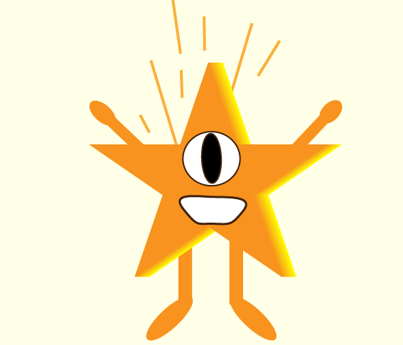
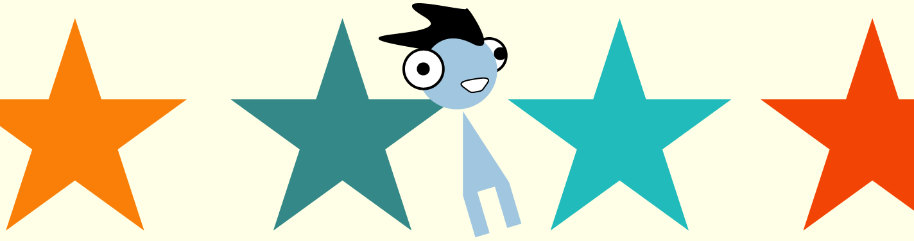
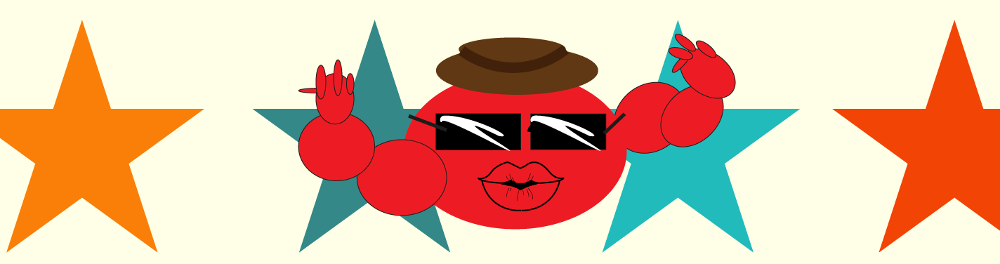
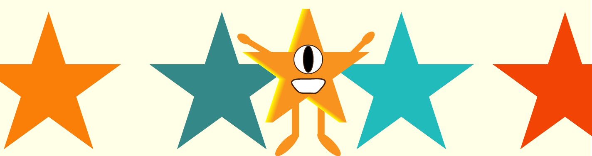

Wat doen wij?
Wij zijn Rody,Bloo en Sterre, zoals je al misschien hebt gelezen op onze home-pagina. Wij bloggen over alle intressante en nuttige evenementen, initiatieven en nieuwtjes wat te maken heeft met duurzaamheid in de mooie stad van Amsterdam. Vandaag nemen we The Social Hub van Amsterdam onder de loep. Wij vertellen alles wat je (volgens ons) te weten zou moeten komen over deze duurzame hotspot, dus laten we maar snel doorgaan wat wij zijn tegengekomen in ons onderzoek.

Wie zijn wij?

Hallo! Mijn naam is Bloo, ik ben een van de drie leden van de blog Community Creation. Mijn taak in het team is de rechearch doen en verzemalen, dat betekent bijvoorbeeld het volgende onderwerp van onze blog uitkiezen, het web surfen om alle revieuws, meningen en informatie bij elkaar te rapen en ze dan overgeven aan Sterre en Rody om de rest te doen.

Yo lezers! Ik ben Rody a.k.a Big Red a.k.a the Red machine en ik hou van nieuwe dingen. Ik werk samen met mijn maatjes Sterre en Bloo hier aan de blog die je nu zit te lezen. Als Bloo zegt dat er iets spannends in de buurt is, zit ik al op mijn Vespa en race er opaf. Er is ook niks wat ik niet leuk vind, festivals, winkels, hotels, je noemt het mnaar en ik ga er naartoe. Als ik klaar ben met het avontuur wat mij opgelegd is door Bloo, breng ik wat ik heb beleefd door naar Sterre, die dan mijn belevingen in de blog schrijft

Goedemorgen/middag of avond lezers, ik heet Sterre. Sinds ik al jong ben hou ik van schrijven, na school (en stiekem op school) zou ik al fantasievolle verhalen bedenken en opschrijven. Nu ik wat ouder ben kan ik nog steeds zeggen dat ik van schrijven hou, zoveel zelfs dat het mijn baan is geworden. Ik luister naar alle intressante wat Bloo en Rody mij te vertellen hebben en doe het vervolgens in een goed geschreven tekstje, zoals je ook hier leest.